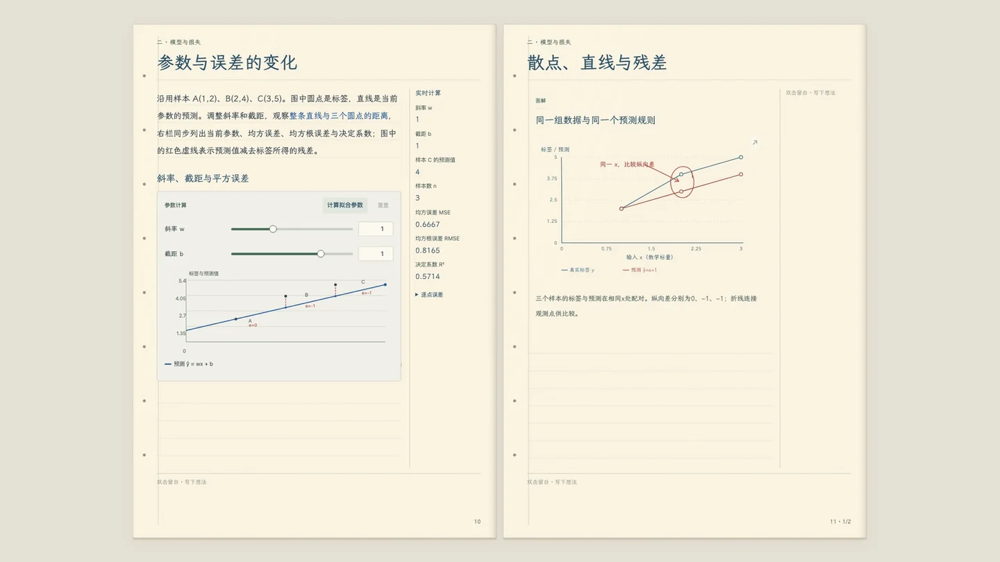

网页会话
对话模型
使用支持运行代码和返回文件的对话。和指令一起发送 PDF、图片或题目。
AI 读不到链接？ 下载 ZIP，上传到同一个会话。
下载构建包下载后只有文件夹，没有 ZIP？
打开 paper-notebook-upload 文件夹，上传里面的 paper-notebook-conversation.zip。如果内层也已展开，压缩整个 paper-notebook 文件夹再上传。

公式配推导，原文配批读。
调参数看曲线，逐行看代码状态。
正文、批注和作答存进一份 HTML。
01 / 在线试读
调一调曲线、逐行看代码，或打开一篇原文批读。
02 / 制作笔记
选你正在使用的 AI，复制指令并发出。可同时附上资料；生成的 HTML 下载后就能打开。
网页会话
使用支持运行代码和返回文件的对话。和指令一起发送 PDF、图片或题目。
AI 读不到链接？ 下载 ZIP，上传到同一个会话。
下载构建包打开 paper-notebook-upload 文件夹，上传里面的 paper-notebook-conversation.zip。如果内层也已展开，压缩整个 paper-notebook 文件夹再上传。
本地工作区
使用能读取 GitHub 和运行命令的 Agent。它会按仓库规范构建，并在工作区交付 HTML。
讲义、书页、题目和代码都可以。告诉 AI 已有基础和想学到什么；需要逐字保留原文时，明确要求严格按材料整理。
03 / 阅读演示